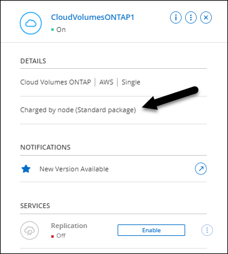
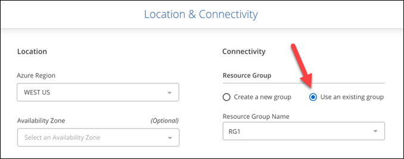

릴리스 정보
릴리스 정보
새로운 기능
 변경 제안
변경 제안
BlueXP에서 Cloud Volumes ONTAP 관리의 새로운 기능에 대해 알아보십시오.
이 페이지에 설명된 향상된 기능은 Cloud Volumes ONTAP 관리를 지원하는 BlueXP 기능에만 적용됩니다. Cloud Volumes ONTAP 소프트웨어 자체의 새로운 기능에 대해 알아보려면 "Cloud Volumes ONTAP 릴리즈 노트 로 이동합니다"
2024년 3월 8일
Amazon Instant Metadata Service v2 지원
AWS, Cloud Volumes ONTAP, 중재자 및 커넥터는 이제 모든 기능에 대해 아마존 인스턴트 메타데이터 서비스 v2(IMDSv2)를 지원합니다. IMDSv2는 취약성에 대한 향상된 보호 기능을 제공합니다. 이전에 IMDSv1만 지원되었습니다.
보안 정책에서 요구하는 경우 IMDSv2를 사용하도록 EC2 인스턴스를 구성할 수 있습니다. 자세한 지침은 을 참조하십시오 "기존 커넥터 관리를 위한 BlueXP 설정 및 관리 설명서".
2024년 3월 5일
Cloud Volumes ONTAP 9.14.1 GA
BlueXP는 이제 AWS, Azure 및 Google Cloud에서 Cloud Volumes ONTAP 9.14.1 일반 가용성 릴리즈를 구축 및 관리할 수 있습니다.
2024년 2월 2일
Azure에서 Edv5 시리즈 VM 지원
Cloud Volumes ONTAP는 이제 9.14.1 릴리즈부터 다음과 같은 Edv5 시리즈 VM을 지원합니다.
-
E4ds_v5 를 참조하십시오
-
E8ds_v5 를 참조하십시오
-
E20s_v5
-
E32ds_v5
-
E48ds_v5
-
E64ds_v5
2024년 1월 16일
BlueXP의 패치 릴리즈
BlueXP에서 패치 릴리즈는 최신 3가지 버전의 Cloud Volumes ONTAP에 대해서만 사용할 수 있습니다.
2024년 1월 8일
Azure에 대한 새로운 VM이 여러 가용 영역
Cloud Volumes ONTAP 9.13.1부터 다음 VM 유형은 신규 및 기존 고가용성 쌍 구축에 Azure 다중 가용성 영역을 지원합니다.
-
L16s_v3
-
L32s_v3
-
L48s_v3를 참조하십시오
-
L64s_v3을 참조하십시오
2023년 12월 6일
Cloud Volumes ONTAP 9.14.1 RC1
BlueXP는 이제 AWS, Azure 및 Google Cloud에 Cloud Volumes ONTAP 9.14.1을 구축 및 관리할 수 있습니다.
300TiB FlexVol 볼륨의 최대 제한값입니다
이제 System Manager와 ONTAP CLI에서 Cloud Volumes ONTAP 9.12.1 P2 및 9.13.0 P2부터, 그리고 Cloud Volumes ONTAP 9.13.1부터 FlexVol 볼륨을 최대 300TiB까지 생성할 수 있습니다.
2023년 12월 5일
다음과 같은 변경 사항이 적용되었습니다.
Azure의 새로운 지역 지원
단일 가용 영역 지역 지원
현재 다음 지역에서는 Cloud Volumes ONTAP 9.12.1 GA 이후 버전용 Azure에서 가용성이 높은 단일 가용 영역 배포를 지원합니다.
-
텔아비브
-
밀라노
여러 가용 영역 지역 지원
현재 다음 지역에서는 Cloud Volumes ONTAP 9.12.1 GA 이후 버전용 Azure에서 가용성이 높은 다중 가용 영역 배포를 지원합니다.
-
중부 인도
-
노르웨이 동부
-
스위스 북부
-
남아프리카 북부에 있습니다
-
아랍 에미리트 북쪽으로
-
중국 북부 3
모든 지역 목록은 를 참조하십시오 "Azure 아래의 글로벌 지역 지도".
2023년 11월 10일
Connector 3.9.35 릴리스에서 다음과 같은 변경 사항이 적용되었습니다.
베를린 지역은 현재 Google Cloud에서 지원됩니다
베를린 지역은 현재 Google Cloud for Cloud Volumes ONTAP 9.12.1 GA 이상에서 지원됩니다.
모든 지역 목록은 를 참조하십시오 "Google Cloud의 글로벌 지역 지도".
2023년 11월 8일
Connector 3.9.35 릴리스에서 다음과 같은 변경 사항이 적용되었습니다.
텔아비브 지역은 현재 AWS에서 지원됩니다
텔아비브 지역은 현재 Cloud Volumes ONTAP 9.12.1 GA 이상에 대해 AWS에서 지원됩니다.
모든 지역 목록은 를 참조하십시오 "AWS에 따른 글로벌 지역 지도".
2023년 11월 1일
커넥터 3.9.34 릴리스에서 다음과 같은 변경 사항이 도입되었습니다.
사우디아라비아 지역은 현재 Google Cloud에서 지원됩니다
사우디아라비아 지역은 현재 Google Cloud for Cloud Volumes ONTAP 및 Connector for Cloud Volumes ONTAP 9.12.1 GA 이상에서 지원됩니다.
모든 지역 목록은 를 참조하십시오 "Google Cloud의 글로벌 지역 지도".
2023년 10월 23일
커넥터 3.9.34 릴리스에서 다음과 같은 변경 사항이 도입되었습니다.
Azure에서 HA 다중 가용 영역 배포를 위해 새로운 영역이 지원됩니다
현재 Azure의 다음 지역에서는 Cloud Volumes ONTAP 9.12.1 GA 이상에 대해 고가용성 다중 가용성 영역 구축을 지원합니다.
-
호주 동부
-
동아시아
-
프랑스 중부
-
북유럽
-
카타르 중부
-
스웨덴 중부
-
서유럽
-
미국 서부 2
여러 가용 영역을 지원하는 모든 지역 목록은 를 참조하십시오 "Azure 아래의 글로벌 지역 지도".
2023년 10월 6일
커넥터 3.9.34 릴리스에서 다음과 같은 변경 사항이 도입되었습니다.
Cloud Volumes ONTAP 9.14.0
BlueXP는 이제 AWS, Azure 및 Google Cloud에서 Cloud Volumes ONTAP 9.14.0 General Availability 릴리즈를 구축 및 관리할 수 있습니다.
2023년 9월 10일
Connector 3.9.33 릴리스에서 다음과 같은 변경 사항이 적용되었습니다.
Azure에서 Lsv3 시리즈 VM 지원
이제 L48s_v3 및 L64s_v3 인스턴스 유형이 Azure의 Cloud Volumes ONTAP에서 지원되므로 9.13.1 릴리즈부터 단일 및 여러 가용 영역의 공유 관리 디스크를 사용한 단일 노드 및 고가용성 쌍 구축이 가능합니다. 이러한 인스턴스 유형은 Flash Cache를 지원합니다.
2023년 7월 30일
다음 변경 사항은 커넥터의 3.9.32 릴리스에 도입되었습니다.
Flash Cache 및 Google Cloud의 고속 쓰기 지원
Google Cloud for Cloud Volumes ONTAP 9.13.1 이상에서는 Flash Cache 및 고속 쓰기 속도를 별도로 활성화할 수 있습니다. 지원되는 모든 인스턴스 유형에서 빠른 쓰기 속도를 사용할 수 있습니다. Flash Cache는 다음과 같은 인스턴스 유형에서 지원됩니다.
-
N2-표준-16
-
N2-표준-32
-
N2-표준-48
-
N2-표준-64
이러한 기능은 단일 노드 및 고가용성 쌍 구축 모두에서 개별적으로 또는 함께 사용할 수 있습니다.
사용 보고서 기능 향상
이제 사용 보고서 내에 표시되는 정보를 다양한 개선 사항을 사용할 수 있습니다. 다음은 사용 보고서의 향상된 기능입니다.
-
이제 TiB 단위는 컬럼 이름에 포함됩니다.
-
이제 일련 번호에 대한 새로운 "노드" 필드가 포함되었습니다.
-
이제 새로운 "워크로드 유형" 열이 스토리지 VM 사용량 보고서에 포함됩니다.
-
이제 스토리지 VM 및 볼륨 사용 보고서에 작업 환경 이름이 포함됩니다.
-
볼륨 유형 “파일”은 이제 “기본(읽기/쓰기)”으로 표시됩니다.
-
볼륨 유형 “보조”는 이제 “보조(DP)”로 표시됩니다.
사용 현황 보고서에 대한 자세한 내용은 을 참조하십시오 "사용 보고서를 다운로드합니다".
2023년 7월 26일
다음 변경 사항은 커넥터의 3.9.31 릴리스에 도입되었습니다.
Cloud Volumes ONTAP 9.13.1 GA
BlueXP는 이제 AWS, Azure 및 Google Cloud에서 Cloud Volumes ONTAP 9.13.1 일반 가용성 릴리스를 배포하고 관리할 수 있습니다.
2023년 7월 2일
다음 변경 사항은 커넥터의 3.9.31 릴리스에 도입되었습니다.
Azure에서 HA 다중 가용성 영역 구축 지원
Azure의 Japan East 및 Korea Central은 현재 Cloud Volumes ONTAP 9.12.1 GA 이상의 HA 다중 가용성 영역 배포를 지원합니다.
여러 가용 영역을 지원하는 모든 지역 목록은 를 참조하십시오 "Azure 아래의 글로벌 지역 지도".
자율주행 랜섬웨어 보호 지원
Cloud Volumes ONTAP에서는 자율 ARP(랜섬웨어 보호)가 현재 지원됩니다. ARP 지원은 Cloud Volumes ONTAP 버전 9.12.1 이상에서 사용할 수 있습니다.
Cloud Volumes ONTAP의 ARP에 대한 자세한 내용은 를 참조하십시오 "자율 랜섬웨어 보호".
2023년 6월 26일
다음 변경은 커넥터의 3.9.30 릴리스에 도입되었습니다.
Cloud Volumes ONTAP 9.13.1 RC1
이제 BlueXP는 AWS, Azure 및 Google Cloud에서 Cloud Volumes ONTAP 9.13.1 을 배포하고 관리할 수 있습니다.
2023년 6월 4일
다음 변경은 커넥터의 3.9.30 릴리스에 도입되었습니다.
Cloud Volumes ONTAP 업그레이드 버전 선택기 업데이트
Cloud Volumes ONTAP 업그레이드 페이지를 통해 최신 버전의 Cloud Volumes ONTAP 또는 이전 버전으로 업그레이드할 수 있습니다.
BlueXP를 통한 Cloud Volumes ONTAP 업그레이드에 대한 자세한 내용은 을 참조하십시오 "Cloud Volumes ONTAP를 업그레이드합니다".
2023년 5월 7일
다음 변경 사항은 커넥터의 3.9.29 릴리스에 도입되었습니다.
Qatar 지역이 이제 Google Cloud에서 지원됩니다
Qatar 지역은 현재 Google Cloud for Cloud Volumes ONTAP 및 Connector for Cloud Volumes ONTAP 9.12.1 GA 이상에서 지원됩니다.
이제 스웨덴 중앙 지역이 Azure에서 지원됩니다
이제 스웨덴 중앙 지역은 Azure for Cloud Volumes ONTAP 및 Cloud Volumes ONTAP 9.12.1 GA 이상의 커넥터에서 지원됩니다.
Azure Australia East에서 HA 다중 가용성 영역 구축 지원
Azure의 오스트레일리아 동부 지역은 현재 Cloud Volumes ONTAP 9.12.1 GA 이상을 위한 HA 다중 가용성 영역 구축을 지원합니다.
충전 사용 내역이 없습니다
이제 용량 기반 라이센스를 구독할 때 부과되는 요금을 확인할 수 있습니다. BlueXP의 디지털 지갑에서 다음 유형의 사용 보고서를 다운로드할 수 있습니다. 사용 현황 보고서는 구독의 용량 세부 정보를 제공하고 Cloud Volumes ONTAP 구독에 포함된 리소스에 대한 비용 청구 방식을 알려줍니다. 다운로드할 수 있는 보고서는 다른 사용자와 쉽게 공유할 수 있습니다.
-
Cloud Volumes ONTAP 패키지 사용
-
높은 수준의 사용
-
스토리지 VM 사용량
-
볼륨 사용량
자세한 내용은 을 참조하십시오 "용량 기반 라이센스 관리".
마켓플레이스 가입 없이 BlueXP에 액세스할 때 알림 메시지가 표시됩니다
이제 시장에 가입하지 않고 BlueXP에서 Cloud Volumes ONTAP에 액세스할 때마다 알림이 표시됩니다. 알림에는 "이 작업 환경에 대한 마켓플레이스 가입이 Cloud Volumes ONTAP 약관을 준수해야 합니다."라고 나와 있습니다.
2023년 4월 4일
Cloud Volumes ONTAP 9.12.1 GA부터 중국 지역이 다음과 같이 AWS에서 지원됩니다.
-
단일 노드 시스템이 지원됩니다.
-
NetApp에서 직접 구매한 라이센스가 지원됩니다.
지역별 이용 가능 여부는 를 참조하십시오 "Cloud Volumes ONTAP를 위한 글로벌 지역 맵".
2023년 4월 3일
다음 변경 사항은 커넥터의 3.9.28 릴리스에 도입되었습니다.
Turin 지역이 이제 Google Cloud에서 지원됩니다
Turin 지역은 현재 Google Cloud for Cloud Volumes ONTAP 및 Connector for Cloud Volumes ONTAP 9.12.1 GA 이상에서 지원됩니다.
BlueXP 디지털 지갑 기능 향상
이제 BlueXP 디지털 지갑에 시장 프라이빗 오퍼와 함께 구입한 라이센스 용량이 표시됩니다.
볼륨 생성 중 주석 지원
이 릴리즈를 사용하면 API를 사용할 때 Cloud Volumes ONTAP FlexGroup 볼륨 또는 FlexVol 볼륨을 생성할 때 주석을 작성할 수 있습니다.
Cloud Volumes ONTAP 개요, 볼륨 및 집계 페이지를 위한 BlueXP 사용자 인터페이스 재설계
BlueXP는 이제 Cloud Volumes ONTAP 개요, 볼륨 및 집계 페이지에 대한 사용자 인터페이스를 새롭게 설계했습니다. 타일 기반 디자인은 각 타일에 보다 포괄적인 정보를 제공하여 사용자 경험을 향상시킬 수 있습니다.

FlexGroup 볼륨은 Cloud Volumes ONTAP를 통해 볼 수 있습니다
CLI 또는 System Manager를 통해 직접 생성된 FlexGroup 볼륨은 이제 BlueXP의 재설계된 볼륨 타일을 통해 볼 수 있습니다. FlexVol 볼륨에 대해 제공된 정보와 동일한 BlueXP는 전용 볼륨 타일을 통해 생성된 FlexGroup 볼륨에 대한 자세한 정보를 제공합니다.

|
현재 BlueXP에서만 기존 FlexGroup 볼륨을 볼 수 있습니다. BlueXP에서 FlexGroup 볼륨을 생성하는 기능은 사용할 수 없지만 향후 릴리스에서 제공될 예정입니다. |

2023년 3월 13일
중국 지역 지원
Cloud Volumes ONTAP 9.12.1 GA부터 중국 지역 지원이 Azure에서 다음과 같이 지원됩니다.
-
Cloud Volumes ONTAP는 중국 북부에서 지원됩니다. 3.
-
단일 노드 시스템이 지원됩니다.
-
NetApp에서 직접 구매한 라이센스가 지원됩니다.
지역별 이용 가능 여부는 를 참조하십시오 "Cloud Volumes ONTAP를 위한 글로벌 지역 맵".
2023년 3월 5일
다음 변경 사항은 커넥터의 3.9.27 릴리스에 도입되었습니다.
Cloud Volumes ONTAP 9.13.0
이제 BlueXP는 AWS, Azure 및 Google Cloud에서 Cloud Volumes ONTAP 9.13.0을 배포하고 관리할 수 있습니다.
Azure에서 16TiB 및 32TiB 지원
이제 Cloud Volumes ONTAP는 16TiB 및 32TiB 디스크 크기를 지원하여 Azure의 관리 대상 디스크에서 실행되는 고가용성 배포를 지원합니다.
에 대해 자세히 알아보십시오 "Azure에서 지원되는 디스크 크기입니다".
MTEKM 라이센스
이제 MTEKM(멀티 테넌트 암호화 키 관리) 라이센스가 버전 9.12.1 GA 이상을 실행하는 새로운 기존 Cloud Volumes ONTAP 시스템과 함께 포함됩니다.
멀티 테넌트 외부 키 관리를 통해 NetApp Volume Encryption을 사용할 때 개별 스토리지 VM(SVM)이 KMIP 서버를 통해 자체 키를 유지할 수 있습니다.
인터넷이 없는 환경 지원
Cloud Volumes ONTAP는 이제 인터넷으로부터 완전히 분리된 모든 클라우드 환경에서 지원됩니다. BYOL(노드 기반 라이센싱)만 이 환경에서 지원됩니다. 용량 기반 라이센스는 지원되지 않습니다. 시작하려면 커넥터 소프트웨어를 수동으로 설치하고, 커넥터에서 실행되는 BlueXP 콘솔에 로그인하고, BlueXP 디지털 지갑에 BYOL 라이센스를 추가한 다음 Cloud Volumes ONTAP를 구축하십시오.
Google Cloud의 Flash Cache 및 빠른 쓰기 속도
Cloud Volumes ONTAP 9.13.0 릴리즈의 일부 인스턴스에서 Flash Cache, 높은 쓰기 속도 및 높은 MTU(최대 전송 단위)를 8,896바이트로 지원할 수 있습니다.
에 대해 자세히 알아보십시오 "Google Cloud 라이센스에 의해 지원되는 구성".
2023년 2월 5일
다음 변경 사항은 커넥터의 3.9.26 릴리스에 도입되었습니다.
AWS에서 반 배정 그룹 생성
이제 AWS HA AZ(단일 가용성 영역) 구축을 통해 반 배정 그룹을 생성할 수 있는 새로운 구성 설정이 제공됩니다. 이제 장애가 발생한 반 배정 그룹 생성을 생략하고 AWS HA 단일 AZ 구축을 성공적으로 완료하도록 선택할 수 있습니다.
반 배정 그룹 생성 설정을 구성하는 방법에 대한 자세한 내용은 을 참조하십시오 "AWS HA 단일 AZ에 대한 배치 그룹 생성 구성".
개인 DNS 영역 구성 업데이트
Azure Private Links를 사용할 때 개인 DNS 영역과 가상 네트워크 간의 링크를 만들지 않도록 새로운 구성 설정을 사용할 수 있습니다. 생성은 기본적으로 활성화되어 있습니다.
WORM 스토리지 및 데이터 계층화
이제 Cloud Volumes ONTAP 9.8 시스템 이상을 생성할 때 데이터 계층화와 WORM 스토리지를 함께 사용할 수 있습니다. WORM 스토리지를 통한 데이터 계층화를 사용하면 데이터를 클라우드의 오브젝트 저장소에 계층화할 수 있습니다.
2023년 1월 1일
다음 변경 사항은 커넥터의 3.9.25 릴리스에 도입되었습니다.
Google Cloud에서 사용 가능한 라이센스 패키지
최적화된 에지 캐시 용량 기반 라이센스 패키지는 Google Cloud Marketplace에서 Cloud Volumes ONTAP에 대해 용량제 오퍼링을 제공하거나 연간 계약으로 제공됩니다.
을 참조하십시오 "Cloud Volumes ONTAP 라이센스".
Cloud Volumes ONTAP의 기본 구성입니다
MTEKM(멀티 테넌트 암호화 키 관리) 라이센스는 새 Cloud Volumes ONTAP 배포에 더 이상 포함되지 않습니다.
Cloud Volumes ONTAP와 함께 자동으로 설치되는 ONTAP 기능 라이센스에 대한 자세한 내용은 를 참조하십시오 "Cloud Volumes ONTAP의 기본 구성".
2022년 12월 15일
Cloud Volumes ONTAP 9.12.0
이제 BlueXP는 AWS 및 Google Cloud에서 Cloud Volumes ONTAP 9.12.0을 배포하고 관리할 수 있습니다.
2022년 12월 8일
Cloud Volumes ONTAP 9.12.1
이제 BlueXP는 새로운 기능과 추가 클라우드 공급자 지역을 지원하는 Cloud Volumes ONTAP 9.12.1을 배포 및 관리할 수 있습니다.
2022년 12월 4일
다음 변경 사항은 커넥터의 3.9.24 릴리스에 도입되었습니다.
Cloud Volumes ONTAP 생성 중에 WORM + 클라우드 백업을 사용할 수 있습니다
Cloud Volumes ONTAP 생성 프로세스 중에 WORM(Write Once, Read Many) 및 클라우드 백업 기능을 모두 활성화할 수 있습니다.
현재 이스라엘 지역은 Google Cloud에서 지원됩니다
현재 이스라엘 지역은 Google Cloud for Cloud Volumes ONTAP 및 Connector for Cloud Volumes ONTAP 9.11.1 P3 이상에서 지원됩니다.
2022년 11월 15일
다음 변경 사항은 커넥터의 3.9.23 릴리스에 도입되었습니다.
Google Cloud의 ONTAP S3 라이센스
ONTAP S3 라이센스는 이제 Google 클라우드 플랫폼에서 버전 9.12.1 이상을 실행하는 신규 및 기존 Cloud Volumes ONTAP 시스템에 포함되어 있습니다.
2022년 11월 6일
다음 변경 사항은 커넥터의 3.9.23 릴리스에 도입되었습니다.
Azure에서 리소스 그룹을 이동하는 중입니다
이제 동일한 Azure 가입 내에서 하나의 리소스 그룹에서 Azure의 다른 리소스 그룹으로 작업 환경을 이동할 수 있습니다.
자세한 내용은 을 참조하십시오 "리소스 그룹 이동 중".
NDMP-COPY 인증
NDMP-copy는 현재 Cloud Volume ONTAP에서 사용하도록 인증되었습니다.
NDMP를 구성하고 사용하는 방법에 대한 자세한 내용은 을 참조하십시오 "NDMP 구성 개요".
Azure에 대한 관리형 디스크 암호화 지원
이제 생성 시 모든 관리되는 디스크를 암호화할 수 있는 새로운 Azure 권한이 추가되었습니다.
이 새로운 기능에 대한 자세한 내용은 을 참조하십시오 "Azure에서 고객이 관리하는 키를 사용하도록 Cloud Volumes ONTAP를 설정합니다".
2022년 9월 18일
다음 변경 사항은 커넥터의 3.9.22 릴리스에 도입되었습니다.
디지털 지갑 기능 향상
-
이제 디지털 지갑에 최적화된 I/O 라이센스 패키지 및 사용자 계정의 Cloud Volumes ONTAP 시스템에 대해 프로비저닝된 WORM 용량에 대한 요약이 표시됩니다.
이러한 세부 정보를 통해 청구 방식 및 추가 용량 구매 여부를 보다 잘 파악할 수 있습니다.
-
이제 하나의 충전 방법을 최적화된 충전 방법으로 변경할 수 있습니다.
비용 및 성능 최적화
이제 Canvas에서 직접 Cloud Volumes ONTAP 시스템의 비용과 성능을 최적화할 수 있습니다.
작업 환경을 선택한 후 * 비용 및 성능 최적화 * 옵션을 선택하여 Cloud Volumes ONTAP의 인스턴스 유형을 변경할 수 있습니다. 더 작은 크기의 인스턴스를 선택하면 비용을 절감하고 더 큰 인스턴스로 변경하면 성능을 최적화할 수 있습니다.

AutoSupport 알림
Cloud Volumes ONTAP 시스템에서 AutoSupport 메시지를 보낼 수 없는 경우 BlueXP에서 알림을 생성합니다. 이 알림에는 네트워킹 문제를 해결하는 데 사용할 수 있는 지침 링크가 포함되어 있습니다.
2022년 7월 31일
다음 변경 사항은 커넥터의 3.9.21 릴리스에 도입되었습니다.
MTEKM 라이센스
이제 MTEKM(멀티 테넌트 암호화 키 관리) 라이센스가 버전 9.11.1 이상을 실행하는 새로운 기존 Cloud Volumes ONTAP 시스템과 함께 포함됩니다.
멀티 테넌트 외부 키 관리를 통해 NetApp Volume Encryption을 사용할 때 개별 스토리지 VM(SVM)이 KMIP 서버를 통해 자체 키를 유지할 수 있습니다.
프록시 서버
이제 AutoSupport 메시지를 보낼 수 있는 아웃바운드 인터넷 연결을 사용할 수 없는 경우 BlueXP는 자동으로 커넥터를 프록시 서버로 사용하도록 Cloud Volumes ONTAP 시스템을 구성합니다.
AutoSupport은 능동적으로 시스템 상태를 모니터링하고 NetApp 기술 지원 팀에 메시지를 보냅니다.
유일한 요구 사항은 커넥터의 보안 그룹이 포트 3128을 통한 _IN인바운드_연결을 허용하는지 확인하는 것입니다. Connector를 배포한 후 이 포트를 열어야 합니다.
충전 방법을 변경하십시오
이제 용량 기반 라이센스를 사용하는 Cloud Volumes ONTAP 시스템의 충전 방법을 변경할 수 있습니다. 예를 들어, Essentials 패키지와 함께 Cloud Volumes ONTAP 시스템을 배포한 경우 비즈니스 요구사항이 변경되면 이를 Professional 패키지로 변경할 수 있습니다. 이 기능은 Digital Wallet에서 사용할 수 있습니다.
보안 그룹 강화
Cloud Volumes ONTAP 작업 환경을 만들면 사용자 인터페이스를 통해 미리 정의된 보안 그룹이 선택한 네트워크 내에서만(권장) 또는 모든 네트워크 내의 트래픽을 허용할지 여부를 선택할 수 있습니다.

2022년 7월 18일
Azure의 새로운 라이센스 패키지
Azure Marketplace 구독을 통해 비용을 지불하는 Azure에서는 Cloud Volumes ONTAP에 대해 2가지 새로운 용량 기반 라이센스 패키지를 사용할 수 있습니다.
-
* 최적화 *: 프로비저닝된 용량과 I/O 작업에 대해 별도로 비용을 지불합니다
-
* Edge Cache *: 라이센스 "Cloud Volumes Edge 캐시"
2022년 7월 3일
다음 변경 사항은 커넥터의 3.9.20 릴리스에 도입되었습니다.
디지털 지갑
이제 Digital Wallet은 사용자 계정의 총 소비된 용량과 라이센스 패키지별 소비된 용량을 표시합니다. 이를 통해 비용이 청구되는 방식 및 추가 용량을 구입해야 하는지 여부를 파악할 수 있습니다.

탄성 볼륨 개선
이제 BlueXP는 사용자 인터페이스에서 Cloud Volumes ONTAP 작업 환경을 생성할 때 Amazon EBS Elastic Volumes 기능을 지원합니다. GP3 또는 ios1 디스크를 사용하는 경우 Elastic Volumes 기능이 기본적으로 활성화됩니다. 스토리지 요구사항에 따라 초기 용량을 선택하고 Cloud Volumes ONTAP를 구축한 후 수정할 수 있습니다.
AWS의 ONTAP S3 라이센스
ONTAP S3 라이센스는 이제 AWS 버전 9.11.0 이상을 실행하는 신규 및 기존 Cloud Volumes ONTAP 시스템에 포함되어 있습니다.
새로운 Azure Cloud 지역 지원
9.10.1 릴리스부터는 Cloud Volumes ONTAP가 이제 Azure West US 3 지역에서 지원됩니다.
Azure의 ONTAP S3 라이센스
ONTAP S3 라이센스는 이제 Azure에서 버전 9.9.1 이상을 실행하는 신규 및 기존 Cloud Volumes ONTAP 시스템에 포함됩니다.
2022년 6월 7일
다음 변경 사항은 커넥터의 3.9.19 릴리스에 도입되었습니다.
Cloud Volumes ONTAP 9.11.1
이제 BlueXP는 새로운 기능과 추가 클라우드 공급자 지역을 지원하는 Cloud Volumes ONTAP 9.11.1을 배포 및 관리할 수 있습니다.
새 고급 보기
Cloud Volumes ONTAP의 고급 관리를 수행해야 하는 경우 ONTAP 시스템과 함께 제공되는 관리 인터페이스인 ONTAP 시스템 관리자를 사용하여 이 작업을 수행할 수 있습니다. BlueXP에 System Manager 인터페이스를 직접 포함하므로 고급 관리를 위해 BlueXP를 떠날 필요가 없습니다.
이 고급 보기는 Cloud Volumes ONTAP 9.10.0 이상에서 미리 보기로 사용할 수 있습니다. NetApp은 이 경험을 개선하고 다음 릴리즈에서 향상된 기능을 추가할 계획입니다. 제품 내 채팅을 사용하여 피드백을 보내주십시오.
Amazon EBS Elastic Volumes 지원
Cloud Volumes ONTAP aggregate에서 Amazon EBS Elastic Volumes 기능을 지원하여 더 나은 성능과 추가 용량을 제공하는 동시에 BlueXP에서 필요에 따라 기본 디스크 용량을 자동으로 늘릴 수 있습니다.
Elastic Volumes에 대한 지원은 _new_Cloud Volumes ONTAP 9.11.0 시스템과 GP3 및 ios1 EBS 디스크 유형으로 시작됩니다.
Elastic Volumes를 지원하려면 Connector에 대한 새로운 AWS 권한이 필요합니다.
"ec2:DescribeVolumesModifications",
"ec2:ModifyVolume",BlueXP에 추가한 각 AWS 자격 증명 세트에 이러한 권한을 제공해야 합니다. "AWS에 대한 최신 커넥터 정책을 봅니다".
공유 AWS 서브넷에 HA 쌍 구축 지원
Cloud Volumes ONTAP 9.11.1에는 AWS VPC 공유에 대한 지원이 포함되어 있습니다. 이번 릴리즈의 Connector에서는 API를 사용할 때 AWS 공유 서브넷에 HA 쌍을 구축할 수 있습니다.
서비스 엔드포인트를 사용할 경우 네트워크 액세스가 제한됩니다
BlueXP는 이제 VNET 서비스 끝점을 사용하여 Cloud Volumes ONTAP와 스토리지 계정 간의 연결을 위해 네트워크 액세스를 제한합니다. BlueXP는 Azure Private Link 연결을 사용하지 않는 경우 서비스 끝점을 사용합니다.
Google Cloud에서 스토리지 VM 생성 지원
이제 Google Cloud의 Cloud Volumes ONTAP에서 9.11.1 릴리즈부터 여러 스토리지 VM이 지원됩니다. 이번 커넥터 릴리스부터 BlueXP를 사용하면 API를 사용하여 Google Cloud의 Cloud Volumes ONTAP HA 쌍에서 스토리지 VM을 생성할 수 있습니다.
스토리지 VM 생성을 지원하려면 Connector에 대한 새로운 Google Cloud 권한이 필요합니다.
- compute.instanceGroups.get
- compute.addresses.getONTAP CLI 또는 System Manager를 사용하여 단일 노드 시스템에 스토리지 VM을 생성해야 합니다.
2022년 5월 2일
다음 변경 사항은 커넥터의 3.9.18 릴리스에 도입되었습니다.
Cloud Volumes ONTAP 9.11.0
이제 BlueXP에서 Cloud Volumes ONTAP 9.11.0을 배포 및 관리할 수 있습니다.
중재자 업그레이드 개선
BlueXP가 HA 쌍의 중재자를 업그레이드할 때 이제 부팅 디스크를 삭제하기 전에 새 중재자 이미지를 사용할 수 있는지 확인합니다. 이 변경 사항은 업그레이드 프로세스가 실패할 경우 중재자가 계속해서 성공적으로 작동할 수 있도록 합니다.
K8s 탭이 제거되었습니다
K8s 탭은 이전 버전에서 사용되지 않으며 이제 제거되었습니다. Kubernetes를 Cloud Volumes ONTAP와 함께 사용하려면 고급 데이터 관리를 위한 작업 환경으로 관리 Kubernetes 클러스터를 Canvas에 추가할 수 있습니다.
Azure에서 연간 계약
이제 Essentials 및 Professional 패키지는 Azure에서 연간 계약을 통해 제공됩니다. NetApp 세일즈 담당자에게 문의하여 연간 계약을 구매할 수 있습니다. 이 계약은 Azure 마켓플레이스에서 프라이빗 오퍼로 제공됩니다.
NetApp이 프라이빗 오퍼를 공유하면 작업 환경을 생성하는 동안 Azure 마켓플레이스에서 구독할 때 연간 계획을 선택할 수 있습니다.
S3 빙하 즉시 검색
이제 Amazon S3 Glacier Instant Retrieval 저장소 클래스에 계층화된 데이터를 저장할 수 있습니다.
Connector에 새로운 AWS 권한이 필요합니다
이제 AZ(단일 가용성 영역)에 HA 쌍을 구축할 때 AWS 분산 배치 그룹을 생성하려면 다음 권한이 필요합니다.
"ec2:DescribePlacementGroups",
"iam:GetRolePolicy",이제 이러한 권한이 있어야 BlueXP에서 배치 그룹을 만드는 방법을 최적화할 수 있습니다.
BlueXP에 추가한 각 AWS 자격 증명 세트에 이러한 권한을 제공해야 합니다. "AWS에 대한 최신 커넥터 정책을 봅니다".
새로운 Google Cloud 지역 지원
Cloud Volumes ONTAP는 이제 9.10.1 릴리스부터 다음 Google 클라우드 영역에서 지원됩니다.
-
델리(아시아 - 남쪽 2)
-
멜번(호주 - 수테스토2)
-
Milan (Europe-west8) - 단일 노드만 해당
-
산티아고(사우스메리카-west1) - 단일 노드만 해당
Google Cloud에서 n2-standard-16을 지원합니다
이제 Google Cloud의 Cloud Volumes ONTAP에서 9.10.1 릴리즈부터 n2-standard-16 머신 유형이 지원됩니다.
Google Cloud 방화벽 정책의 개선 사항
-
Google Cloud에서 Cloud Volumes ONTAP HA 쌍을 생성하면 BlueXP가 VPC에 기존 방화벽 정책을 모두 표시합니다.
이전에는 BlueXP에서 대상 태그가 없는 VPC-1, VPC-2 또는 VPC-3에 정책을 표시하지 않았습니다.
-
Google Cloud에서 Cloud Volumes ONTAP 단일 노드 시스템을 생성할 때, 이제 선택한 VPC 전용(권장) 또는 모든 VPC 내의 트래픽을 허용하도록 사전 정의된 방화벽 정책을 선택할 수 있습니다.
Google Cloud 서비스 계정 개선
Cloud Volumes ONTAP에서 사용할 Google Cloud 서비스 계정을 선택하면 BlueXP에 각 서비스 계정과 연결된 이메일 주소가 표시됩니다. 이메일 주소를 보면 동일한 이름을 공유하는 서비스 계정을 쉽게 구별할 수 있습니다.

2022년 4월 3일
System Manager 링크가 제거되었습니다
이전에 Cloud Volumes ONTAP 작업 환경 내에서 사용할 수 있었던 시스템 관리자 링크가 제거되었습니다.
Cloud Volumes ONTAP 시스템에 연결된 웹 브라우저에 클러스터 관리 IP 주소를 입력하여 System Manager에 연결할 수도 있습니다. "System Manager에 연결하는 방법에 대해 자세히 알아보십시오".
WORM 스토리지에 대한 충전 중
출시 특별 요금이 만료되었으므로 이제 WORM 스토리지 사용 요금이 부과됩니다. WORM 볼륨의 총 프로비저닝 용량에 따라 매시간 충전됩니다. 이는 신규 및 기존 Cloud Volumes ONTAP 시스템에 적용됩니다.
2022년 2월 27일
다음 변경 사항은 커넥터의 3.9.16 릴리스에 도입되었습니다.
볼륨 마법사를 다시 설계했습니다
최근에 도입된 새 볼륨 생성 마법사는 * 고급 할당 * 옵션에서 특정 애그리게이트에 볼륨을 생성할 때 사용할 수 있습니다.
2022년 2월 9일
마켓플레이스 업데이트
-
이제 Essentials 패키지와 Professional 패키지를 모든 클라우드 공급자 마켓플레이스에서 사용할 수 있습니다.
이러한 용량을 기준으로 비용을 지불할 수 있으며, 연간 계약을 클라우드 공급자로부터 직접 구매할 수 있습니다. NetApp에서 직접 용량 라이센스를 구매할 수 있습니다.
클라우드 마켓플레이스에 기존 구독이 있는 경우 이러한 새로운 오퍼링을 자동으로 구독할 수 있습니다. 새로운 Cloud Volumes ONTAP 작업 환경을 구축할 때 용량 충전을 선택할 수 있습니다.
신규 고객인 경우 새 작업 환경을 만들 때 BlueXP에서 가입하라는 메시지를 표시합니다.
-
모든 클라우드 공급자 마켓플레이스의 노드별 라이센스는 더 이상 사용되지 않으며 새 가입자에게 더 이상 제공되지 않습니다. 여기에는 연간 계약 및 시간별 가입(탐색, 표준, 프리미엄)이 포함됩니다.
이 충전 방법은 활성 서브스크립션을 보유한 기존 고객에게도 계속 사용할 수 있습니다.
2022년 2월 6일
할당되지 않은 라이센스 교환
아직 사용하지 않은 Cloud Volumes ONTAP에 대해 할당되지 않은 노드 기반 라이센스가 있는 경우 Cloud Backup 라이센스, Cloud Data Sense 라이센스 또는 Cloud Tiering 라이센스로 변환하여 라이센스를 교환할 수 있습니다.
이 작업은 Cloud Volumes ONTAP 라이센스를 해지하고 만료 날짜가 동일한 서비스에 대해 달러 상당 라이센스를 생성합니다.
2022년 1월 30일
다음 변경 사항은 커넥터의 3.9.15 릴리스에 도입되었습니다.
재설계된 라이선스 선택
새로운 Cloud Volumes ONTAP 작업 환경을 만들 때 라이센스 선택 화면을 다시 설계했습니다. 이 변경 사항은 2021년 7월에 소개된 용량 기준 과금 방법을 강조하며, 클라우드 공급자 마켓플레이스를 통해 예정된 오퍼링을 지원합니다.
디지털 지갑 업데이트
Cloud Volumes ONTAP 라이선스를 단일 탭에 통합하여 * Digital Wallet * 을 업데이트했습니다.
2022년 1월 2일
다음 변경 사항은 커넥터의 3.9.14 릴리스에 도입되었습니다.
추가 Azure VM 유형 지원
Cloud Volumes ONTAP는 이제 Microsoft Azure에서 9.10.1 릴리즈부터 다음 VM 유형으로 지원됩니다.
-
E4ds_v4
-
E8ds_v4
-
E32ds_v4
-
E48ds_v4
로 이동합니다 "Cloud Volumes ONTAP 릴리즈 노트" 지원되는 구성에 대한 자세한 내용은 를 참조하십시오.
FlexClone 충전 업데이트
를 사용하는 경우 "용량 기반 라이센스" Cloud Volumes ONTAP의 경우 FlexClone 볼륨에 사용된 용량에 대해 더 이상 청구되지 않습니다.
충전 방법이 표시됩니다
BlueXP는 이제 Canvas의 오른쪽 패널에 있는 각 Cloud Volumes ONTAP 작업 환경에 대한 충전 방법을 보여 줍니다.

사용자 이름을 선택합니다
Cloud Volumes ONTAP 작업 환경을 만들면 기본 관리자 사용자 이름 대신 기본 사용자 이름을 입력할 수 있습니다.

볼륨 생성 기능이 향상되었습니다
볼륨 생성을 위해 다음과 같은 몇 가지 기능이 향상되었습니다.
-
볼륨 생성 마법사를 쉽게 다시 설계했습니다.
-
볼륨에 추가한 태그는 이제 Application Templates 서비스와 연결되어 리소스 관리를 구성하고 단순화할 수 있습니다.
-
이제 NFS에 대한 사용자 지정 엑스포트 정책을 선택할 수 있습니다.

2021년 11월 28일
다음 변경 사항은 커넥터의 3.9.13 릴리스에 도입되었습니다.
Cloud Volumes ONTAP 9.10.1
이제 BlueXP에서 Cloud Volumes ONTAP 9.10.1을 배포 및 관리할 수 있습니다.
NetApp Keystone 구독
이제 Keystone 가입을 통해 Cloud Volumes ONTAP HA 쌍에 대한 비용을 지불할 수 있습니다.
Keystone 가입은 선불 종량제 구독 기반 서비스로, OpEx 소비 모델을 선호하는 고객에게 원활한 하이브리드 클라우드 경험을 제공하여 자본 지출 또는 임대를 지원합니다.
Keystone 가입은 BlueXP에서 구축할 수 있는 모든 새로운 버전의 Cloud Volumes ONTAP에서 지원됩니다.
새로운 AWS 지역 지원
Cloud Volumes ONTAP는 현재 AWS 아시아 태평양(Osaka) 지역(AP-북동부-3)에서 지원됩니다.
포트 감소
포트 8023 및 4900은 단일 노드 시스템과 HA 쌍 모두에 대해 Azure의 Cloud Volumes ONTAP 시스템에서 더 이상 열리지 않습니다.
이 변경 사항은 커넥터의 3.9.13 릴리스부터 _NEW_Cloud Volumes ONTAP 시스템에 적용됩니다.
2021년 10월 4일
Connector의 3.9.11 릴리스에는 다음과 같은 변경 사항이 도입되었습니다.
Cloud Volumes ONTAP 9.10.0
이제 BlueXP에서 Cloud Volumes ONTAP 9.10.0을 배포 및 관리할 수 있습니다.
구축 시간 단축
일반 쓰기 속도를 사용하도록 설정한 경우 Microsoft Azure 또는 Google Cloud에서 Cloud Volumes ONTAP 작업 환경을 구축하는 데 걸리는 시간을 단축했습니다. 배포 시간은 이제 평균 3-4분 더 짧습니다.
2021년 9월 2일
다음 변경 사항은 커넥터의 3.9.10 릴리스에 도입되었습니다.
Azure에서 고객이 관리하는 암호화 키
Azure의 Cloud Volumes ONTAP에서 를 사용하여 데이터가 자동으로 암호화됩니다 "Azure 스토리지 서비스 암호화" Microsoft 관리 키를 사용합니다. 그러나 이제 다음 단계를 완료하여 고객이 관리하는 암호화 키를 사용할 수 있습니다.
-
Azure에서 키 볼트를 작성한 다음 해당 볼트에 키를 생성합니다.
-
BlueXP에서 API를 사용하여 키를 사용하는 Cloud Volumes ONTAP 작업 환경을 만듭니다.
2021년 7월 7일
커넥터 3.9.8 릴리스에는 다음과 같은 변경 사항이 도입되었습니다.
새로운 충전 방법
Cloud Volumes ONTAP에 새로운 충전 방법을 사용할 수 있습니다.
-
* 용량 기반 BYOL *: 용량 기반 라이센스를 통해 Cloud Volumes ONTAP/TiB 용량 단위로 비용을 지불할 수 있습니다. 라이센스는 NetApp 계정에 연결되어 있으며 라이센스를 통해 사용할 수 있는 용량이 충분한 경우 여러 Cloud Volumes ONTAP 시스템을 생성할 수 있도록 지원합니다. 용량 기반 라이센스는 패키지 형태인 _Essentials_나 _Professional_로 제공됩니다.
-
* Freemium 제공 *: Freemium을 통해 NetApp의 모든 Cloud Volumes ONTAP 기능을 무료로 사용할 수 있습니다(클라우드 공급자 요금은 여전히 적용됨). 시스템당 프로비저닝된 용량 500GiB로 제한되며 지원 계약이 없습니다. 최대 10개의 Freemium 시스템을 사용할 수 있습니다.
다음은 선택할 수 있는 충전 방법의 예입니다.

WORM 스토리지는 일반적인 용도로 사용할 수 있습니다
WORM(Write Once, Read Many) 스토리지는 더 이상 미리 보기에 표시되지 않으며 Cloud Volumes ONTAP에서 일반적으로 사용할 수 있습니다. "WORM 스토리지에 대해 자세히 알아보십시오".
AWS에서 m5dn.24xlarge 지원
이제 Cloud Volumes ONTAP는 9.9.1 릴리스부터 PAYGO Premium, BYOL(Bring Your Own License) 및 Freemium과 같은 충전 방법을 사용하여 m5dn.24xLarge 인스턴스 유형을 지원합니다.
기존 Azure 리소스 그룹을 선택합니다
Azure에서 Cloud Volumes ONTAP 시스템을 생성할 때 이제 VM 및 관련 리소스에 대한 기존 리소스 그룹을 선택할 수 있습니다.

배포 실패 또는 삭제 시 BlueXP에서 리소스 그룹에서 Cloud Volumes ONTAP 리소스를 제거할 수 있는 권한은 다음과 같습니다.
"Microsoft.Network/privateEndpoints/delete",
"Microsoft.Compute/availabilitySets/delete",BlueXP에 추가한 각 Azure 자격 증명 세트에 이러한 권한을 제공해야 합니다. "Azure의 최신 커넥터 정책을 봅니다".
이제 Azure에서 BLOB 공용 액세스가 비활성화되었습니다
보안을 강화하기 위해 BlueXP는 Cloud Volumes ONTAP용 저장소 계정을 만들 때 * Blob 공용 액세스 * 를 비활성화합니다.
Azure Private Link 기능 향상
기본적으로 BlueXP는 새 Cloud Volumes ONTAP 시스템의 부팅 진단 저장소 계정에서 Azure Private Link 연결을 활성화합니다.
즉, Cloud Volumes ONTAP의 _ALL_STORAGE 계정은 이제 전용 링크를 사용합니다.
Google Cloud에서 균형 잡힌 영구 디스크
9.9.1 릴리스부터 Cloud Volumes ONTAP는 이제 균형 유지 디스크(PD 균형 조정)를 지원합니다.
이러한 SSD는 GiB당 더 낮은 IOPS를 제공하여 성능과 비용의 균형을 유지합니다.
Custom-4-16384 Google Cloud에서는 더 이상 지원되지 않습니다
CUSTOM-4-16384 시스템 유형은 새로운 Cloud Volumes ONTAP 시스템에서 더 이상 지원되지 않습니다.
이 기계 유형에서 실행 중인 기존 시스템이 있는 경우 계속 사용할 수 있지만 n2-standard-4 기계 유형으로 전환하는 것이 좋습니다.
2021년 5월 30일
커넥터 3.9.7 릴리스에는 다음과 같은 변경 사항이 도입되었습니다.
AWS의 새로운 프로페셔널 패키지
새로운 프로페셔널 패키지를 이용하면 AWS 마켓플레이스의 연간 계약을 활용하여 Cloud Volumes ONTAP와 Cloud Backup Service를 번들로 제공할 수 있습니다. 지급은 TiB당. 이 구독을 통해 온프레미스 데이터를 백업할 수 없습니다.
이 지불 옵션을 선택하면 EBS 디스크를 통해 Cloud Volumes ONTAP 시스템당 최대 2개의 PiB를 프로비저닝하고 S3 오브젝트 스토리지(단일 노드 또는 HA)로 계층화할 수 있습니다.
로 이동합니다 "AWS 마켓플레이스 페이지를 참조하십시오" 가격 세부 정보를 보려면 로 이동하십시오 "Cloud Volumes ONTAP 릴리즈 노트" 이 라이센스 옵션에 대해 자세히 알아보십시오.
AWS의 EBS 볼륨에 있는 태그
이제 BlueXP는 새로운 Cloud Volumes ONTAP 작업 환경을 만들 때 EBS 볼륨에 태그를 추가합니다. 이 태그는 Cloud Volumes ONTAP를 배포한 후에 이미 생성되었습니다.
조직에서 SCP(서비스 제어 정책)를 사용하여 사용 권한을 관리하는 경우 이 변경 사항이 도움이 될 수 있습니다.
자동 계층화 정책의 최소 냉각 기간
auto_Tiering 정책을 사용하여 볼륨에 대한 데이터 계층화를 활성화한 경우 이제 API를 사용하여 최소 냉각 기간을 조정할 수 있습니다.
사용자 지정 엑스포트 정책의 개선
새 NFS 볼륨을 생성하면 BlueXP에서 사용자 지정 내보내기 정책을 오름차순으로 표시하여 필요한 엑스포트 정책을 쉽게 찾을 수 있습니다.
이전 클라우드 스냅샷 삭제
BlueXP는 이제 Cloud Volumes ONTAP 시스템을 배포하고 전원을 켤 때마다 생성된 루트 및 부팅 디스크의 이전 클라우드 스냅샷을 삭제합니다. 가장 최근의 두 스냅샷만 루트 볼륨과 부팅 볼륨 모두에 대해 보존됩니다.
이러한 기능 향상으로 더 이상 필요하지 않은 스냅샷을 제거하여 클라우드 공급자 비용을 절감할 수 있습니다.
Connector에는 Azure 스냅샷을 삭제할 수 있는 새로운 권한이 필요합니다. "Azure의 최신 커넥터 정책을 봅니다".
"Microsoft.Compute/snapshots/delete"2021년 5월 24일
Cloud Volumes ONTAP 9.9.1
이제 BlueXP에서 Cloud Volumes ONTAP 9.9.1을 배포하고 관리할 수 있습니다.
2021년 4월 11일
커넥터의 3.9.5 릴리스와 함께 다음과 같은 변경 사항이 도입되었습니다.
논리적 공간 보고
이제 BlueXP는 Cloud Volumes ONTAP에 대해 생성되는 초기 스토리지 VM에 대한 논리적 공간 보고를 지원합니다.
공간이 논리적으로 보고되면 ONTAP에서는 스토리지 효율성 기능으로 절약된 모든 물리적 공간이 사용된 것으로 보고하도록 볼륨 공간을 보고합니다.
AWS에서 GP3 디스크 지원
Cloud Volumes ONTAP는 이제 9.7 릴리즈부터 _GP3(General Purpose SSD)_디스크를 지원합니다. GP3 디스크는 광범위한 워크로드에 대한 비용과 성능의 균형을 맞추는 가장 경제적인 SSD입니다.
콜드 HDD 디스크는 AWS에서 더 이상 지원되지 않습니다
Cloud Volumes ONTAP는 더 이상 콜드 HDD(SC1) 디스크를 지원하지 않습니다.
Azure 저장소 계정용 TLS 1.2
BlueXP가 Azure for Cloud Volumes ONTAP에서 저장소 계정을 만들 때 저장소 계정의 TLS 버전은 이제 1.2입니다.
2021년 3월 8일
다음 변경 사항은 커넥터의 3.9.4 릴리스에 도입되었습니다.
Cloud Volumes ONTAP 9.9.0
이제 BlueXP에서 Cloud Volumes ONTAP 9.9.0을 배포하고 관리할 수 있습니다.
AWS C2S 환경 지원
이제 C2S(AWS 상용 클라우드 서비스) 환경에 Cloud Volumes ONTAP 9.8을 구축할 수 있습니다.
고객 관리 CMK를 통한 AWS 암호화
BlueXP에서는 항상 AWS KMS(키 관리 서비스)를 사용하여 Cloud Volumes ONTAP 데이터를 암호화할 수 있습니다. Cloud Volumes ONTAP 9.9.0부터 EBS 디스크의 데이터와 고객이 관리하는 CMK를 선택하면 S3로 계층화된 데이터가 암호화됩니다. 이전에는 EBS 데이터만 암호화되었습니다.
CMK를 사용하려면 Cloud Volumes ONTAP IAM 역할을 제공해야 합니다.
Azure DoD 지원
이제 Azure 국방부(DoD) Impact Level 6(IL6)에 Cloud Volumes ONTAP 9.8을 배포할 수 있습니다.
Google Cloud의 IP 주소 감소
Cloud Volumes ONTAP 9.8 이상의 Google Cloud에 필요한 IP 주소 수를 줄였습니다. 기본적으로 IP 주소가 하나만 있으면 됩니다(인터클러스터 LIF를 노드 관리 LIF와 통합함). API를 사용할 때 SVM 관리 LIF 생성을 건너뛸 수도 있으므로 추가 IP 주소가 필요하지 않습니다.
Google Cloud에서 공유 VPC 지원
Google Cloud에 Cloud Volumes ONTAP HA 쌍을 구축하면 VPC-1, VPC-2 및 VPC-3용 공유 VPC를 선택할 수 있습니다. 이전에는 VPC-0만 공유 VPC가 될 수 있었습니다. 이 변경 사항은 Cloud Volumes ONTAP 9.8 이상에서 지원됩니다.
2021년 1월 4일
다음 변경 사항은 커넥터의 3.9.2 릴리스에 도입되었습니다.
AWS 아웃포스트
몇 개월 전, Cloud Volumes ONTAP은 AWS(Amazon Web Services) out포스트 준비 지정을 달성했다고 발표했습니다. 오늘, AWS 아웃포스트에서 BlueXP 및 Cloud Volumes ONTAP의 검증을 마쳤습니다.
AWS 아웃포스트가 있는 경우 작업 환경 마법사에서 아웃포스트 VPC를 선택하여 해당 아웃포스트에 Cloud Volumes ONTAP를 구축할 수 있습니다. 이러한 경험은 AWS에 상주하는 다른 VPC와 동일합니다. 먼저 AWS Outpost에 Connector를 구축해야 합니다.
몇 가지 제한 사항이 있습니다.
-
현재 단일 노드 Cloud Volumes ONTAP 시스템만 지원됩니다
-
Cloud Volumes ONTAP와 함께 사용할 수 있는 EC2 인스턴스는 Outpost에서 사용할 수 있는 인스턴스로 제한됩니다
-
현재 GP2(범용 SSD)만 지원됩니다
지원되는 Azure 지역의 Ultra SSD VNVRAM
이제 Cloud Volumes ONTAP는 단일 노드 시스템에서 E32s_v3 VM 유형을 사용할 때 Ultra SSD를 VNVRAM으로 사용할 수 있습니다 "지원되는 모든 Azure 지역에서 제공됩니다".
VNVRAM은 향상된 쓰기 성능을 제공합니다.
Azure에서 가용성 영역을 선택합니다
이제 단일 노드 Cloud Volumes ONTAP 시스템을 구축할 가용성 영역을 선택할 수 있습니다. AZ를 선택하지 않으면 BlueXP가 사용자를 위해 하나를 선택합니다.

Google Cloud의 더 큰 디스크
이제 Cloud Volumes ONTAP는 GCP에서 64TB 디스크를 지원합니다.
|
|
GCP 제한으로 인해 디스크만 사용할 경우 최대 시스템 용량은 256TB로 유지됩니다. |
Google Cloud의 새로운 컴퓨터 유형
Cloud Volumes ONTAP는 이제 다음과 같은 기계 유형을 지원합니다.
-
N2-standard-4(Explore 라이센스와 BYOL 포함
-
표준 라이센스와 BYOL의 N2-Standard-8
-
프리미엄 라이센스가 있고 BYOL이 있는 N2-STANDARD-32
2020년 11월 3일
다음 변경 사항은 Connector의 3.9.0 릴리스에 도입되었습니다.
Cloud Volumes ONTAP용 Azure 프라이빗 링크
기본적으로 BlueXP에서는 이제 Cloud Volumes ONTAP 및 관련 저장소 계정 간에 Azure Private Link 연결을 사용할 수 있습니다. 전용 링크는 Azure의 엔드포인트 간 연결을 보호합니다.